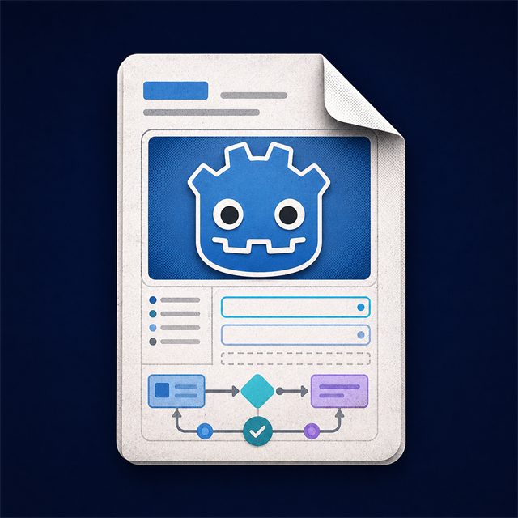

Stack navigation
UIFlow.push(ShopPage) resolves the scene, runs enter/exit hooks, and keeps modal pages from leaking input downward.

UIFlowGodot 4.6 · Free MIT
Treat menus like a stack, not a spaghetti of scenes. Push pages by class, animate the handoff, bind data, and keep gamepad prompts honest.
Pause, shop, inventory, dialogue — the same stack, the same lifecycle, fewer one-off managers.
UIFlow.push(ShopPage) resolves the scene, runs enter/exit hooks, and keeps modal pages from leaking input downward.
Directional focus stays on the top page. ActionBar chips follow the last device. AxisBinder maps the right stick onto sliders.
PageOpener, VisibilityGroup, ChildPool, ChildrenSwitcher — scene-local helpers so buttons don’t grow custom scripts.
Theme Editor, page graph, DataGrid, TreeView, Survivors demo — productivity on top of the same Free core.
Scenes live under res://UIScene/. Routing talks in types, not path strings.
class_name HomePage extends UIFlowPage
func _on_opened(data: Variant = null) -> void:
UIFlow.set_default_focus($PlayButton)
func _on_back() -> void:
UIFlow.push(SettingsPage)MIT core for every project. Pro adds editor tooling and advanced components when the UI graph gets serious.